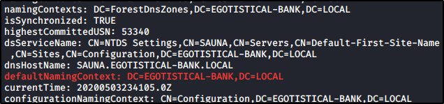

ldapsearch -h <TARGET IP> 389 -x -s base -b '' "(objectClass=*)" "*" +


Take a note of naming context/base ,with this we can enum ldap users and their access details and uids , etc
defaultnamingcontext: dc=xxx,dc=xxx,dc=xx
We are gonna use this command.
ldapsearch -h <TARGET IP> -p 389 -x -b “dc=xxx,dc=xxx,dc=xx”

After that, you can use a nmap script to know more about credentials: